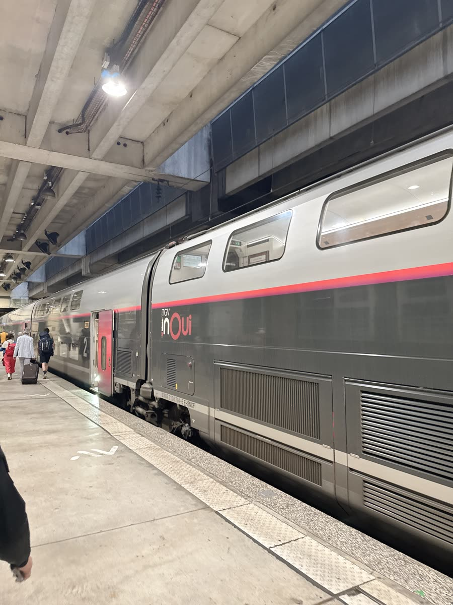
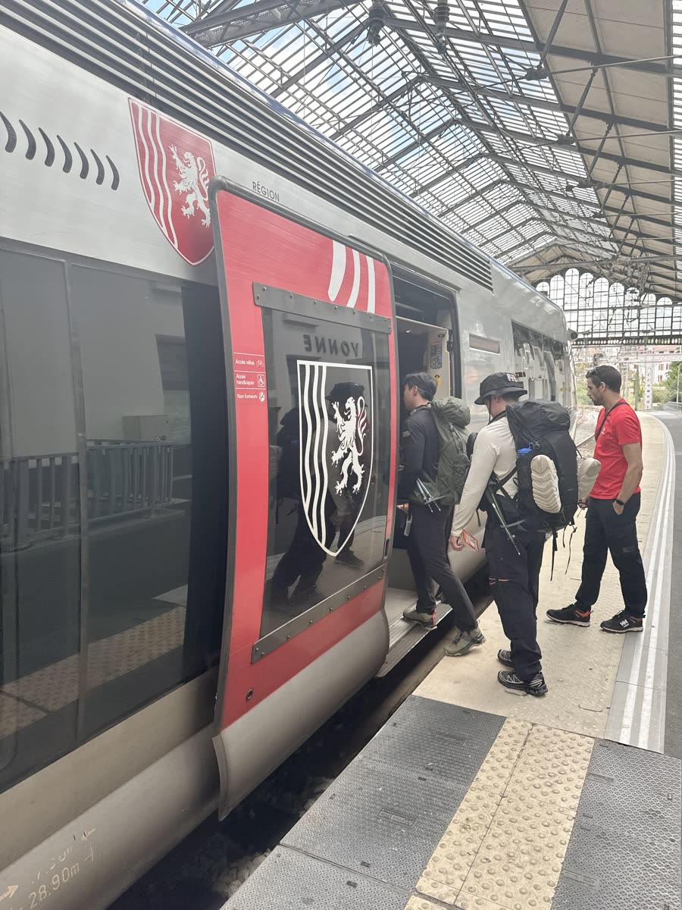
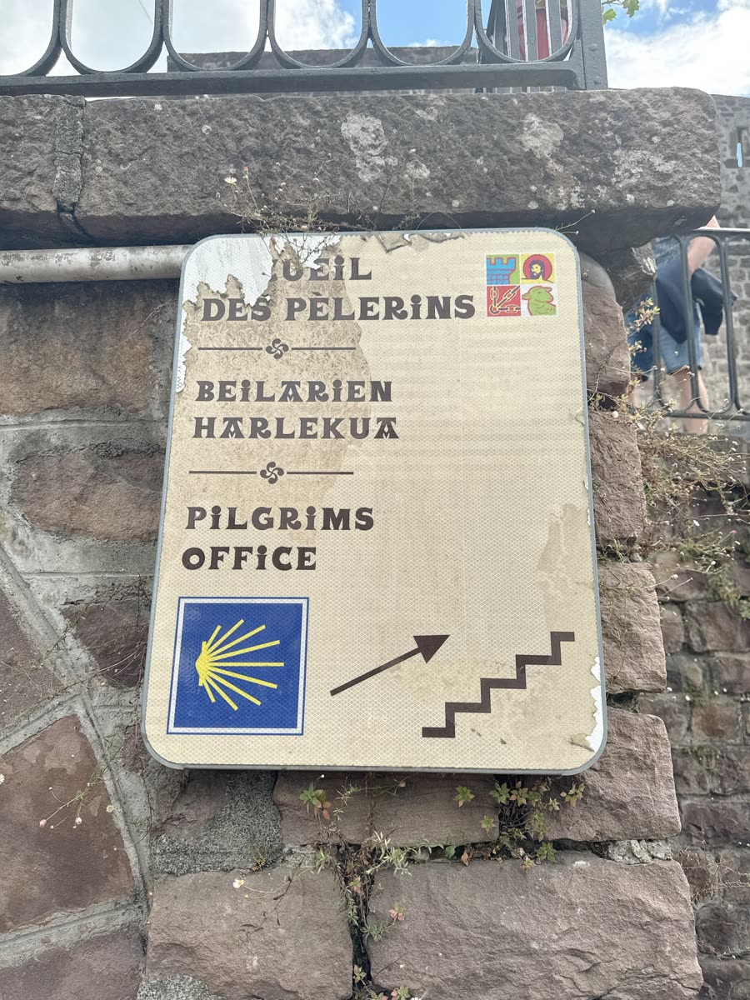
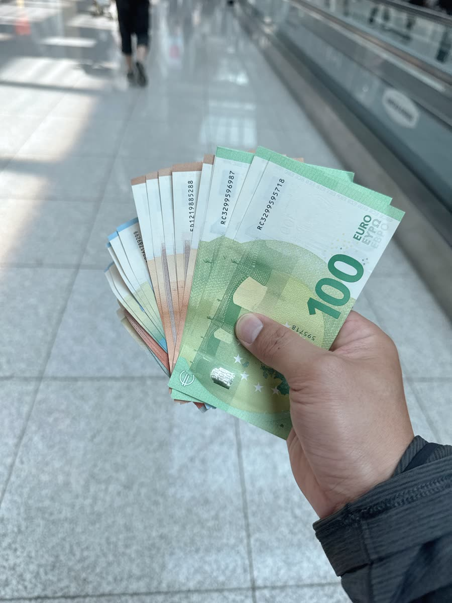
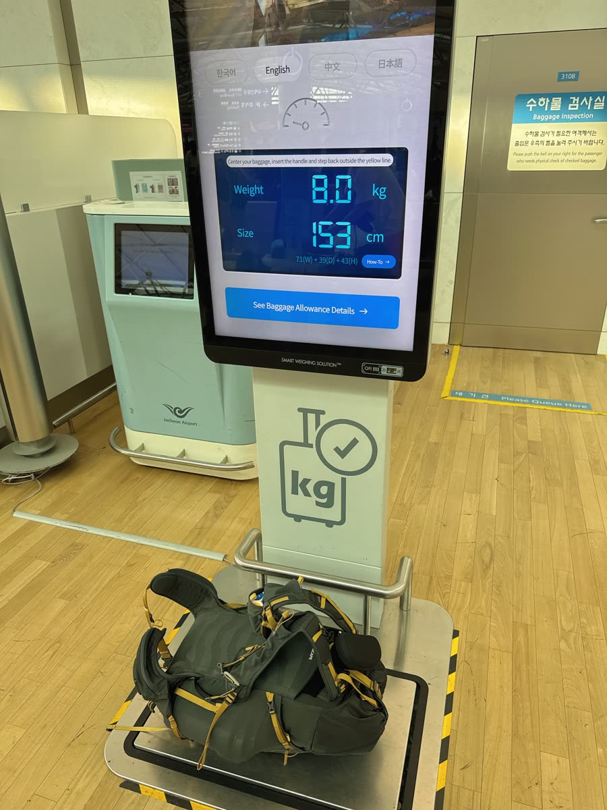
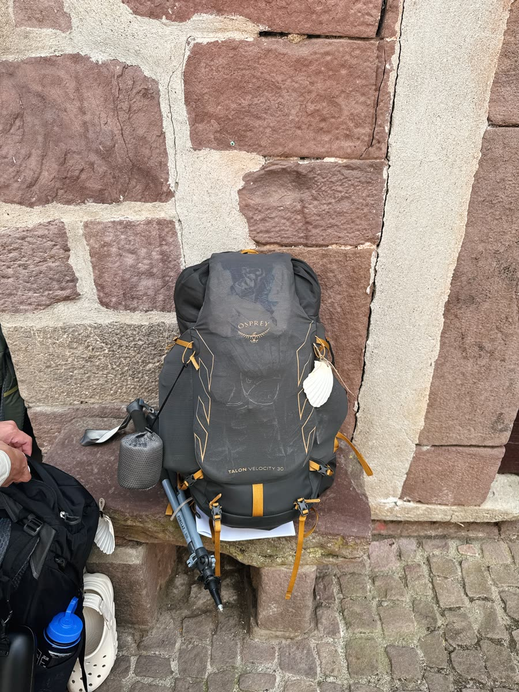

순례자의 한끼한밤
순례자의 한끼한밤비행기표 120만 원,
현지에서 200만 원, 배낭 11kg.
그리고 괜히 가져간 스틱.
순례길 간다고 하면 제일 많이 듣는 질문은 "얼마 들었어?"랑 "뭐 챙겨 가?"다. 나도 떠나기 전엔 블로그랑 유튜브를 엄청 뒤졌다. 그래서 이번 편은 이야기 말고, 다녀온 사람으로서 진짜 쓸모 있었던 것들만 적어 본다. 어디까지나 2025년 여름, 프랑스길 32일을 걸은 한 사람의 경험이다.
우선 가는 길. 인천에서 파리로 날아가서, 파리에서 고속열차를 타고 프랑스 남서쪽 바욘까지 내려갔다. 바욘에서 작은 기차로 갈아타면 한 시간 남짓 산길을 달려 생장피에드포르에 도착한다. 생장에 내리면 다들 같은 방향으로 걸어가는데, 그 끝에 순례자 사무소가 있다. 여기서 순례자 여권을 받고 가리비 껍데기를 하나 고르면 준비 끝이다.



다음은 돈. 비행기표가 120만 원 정도였고, 순례길 위에서 쓴 돈은 200만 원쯤이었다. 32일로 나누면 하루 6만 원 남짓이다. 숙소, 밥, 맥주, 간식이 거의 전부고, 여기엔 길에서 산 팔찌랑 키링 같은 기념품도 다 들어 있다. 순례길은 생각보다 돈이 덜 드는 여행이다. 대신 기념품 앞에서는 지갑이 잘 열린다. 다 순례길 탓이다.

배낭은 오스프리 30L대 배낭을 메고 갔다. 공항 저울에 올렸을 때 8kg이었는데, 길 위에서 물이랑 간식을 넣고 다니니 평균 11kg 정도였다. 걸어 보니 그 3kg 차이가 은근히 크다. 짐은 쌀 때 한 번 더 빼는 게 맞다. 옷은 몇 벌만 가져가서 매일 저녁 빨아 입었다. 어차피 매일 빨래하니까 많이 가져갈 이유가 없다.


신발은 살로몬 XT-6를 신었다. 32일 동안 물집이 한 번도 안 생겼다. 순례길에서 물집 없이 끝냈다고 하면 다들 놀란다. 신발은 사람마다 발이 다르니 정답은 없지만, 새 신발 말고 미리 신어서 길들인 신발로 가는 건 꼭 권하고 싶다.
그리고 스틱. 순례길 준비물 이야기에 빠지지 않는 게 스틱인데, 모든 사람이 꼭 필요하다고 한다. 그래서 나도 챙겨 갔다. 그런데 걸어 보니 나한테는 괜히 가져간 짐이었다. 위 배낭 사진을 잘 보면 옆에 그 스틱이 슬쩍 보인다. 사진 속에서도 조용히 짐 노릇 중이다. 원래 산을 스틱 없이 다니는 편이라 후지산도 한라산도 그냥 올랐다. 무릎이 약하거나 내리막이 걱정되는 사람한테는 분명 도움이 되겠지만, 남들이 다 챙긴다고 무조건 챙길 필요는 없다는 게 내 생각이다.
잠자리는 생각보다 걱정할 게 없었다. 알베르게는 대부분 먼저 온 사람부터 받는데, 아침 일찍 출발해서 일찍 도착하다 보니 거의 늘 쉽게 들어갔다. 너무 피곤한 날에는 걸으면서 부킹닷컴으로 그날 묵을 곳을 미리 찾아봤다. 공립 알베르게랑 값 차이가 별로 없는데 시설이 확실히 좋으면 사설 알베르게로 갔다. 2편에 썼던 "역시 돈이 좋네"가 나온 날이 바로 그런 날이다.
첫날 피레네는 따로 준비하는 게 좋다. 나는 새벽 6시쯤 출발해서 오후 3~4시쯤 도착했는데, 하루 종일 비와 바람과 안개였다. 우의랑 배낭 레인커버는 꼭 바로 꺼낼 수 있는 곳에 넣어 두자. 해 뜨기 전에 출발하는 날이 많으니 헤드랜턴도 필수다. 중간에 오리손 산장에서 쉬어 가면 한결 낫다.
마지막으로 한식. 한 달 내내 빵이랑 파스타만 먹다 보면 몸이 먼저 김치를 찾는다. 큰 마을 마트를 잘 뒤지면 신라면이나 김치를 파는 곳이 가끔 있다. 보이면 그냥 사자. 나중에 고마워할 거다.
한 줄로 정리하면
- 가는 길: 인천 → 파리 → (고속열차) 바욘 → (작은 기차) 생장피에드포르
- 돈: 비행기표 약 120만 원 + 현지 약 200만 원(32일, 기념품 포함)
- 배낭: 30L대, 길 위에서 평균 11kg. 옷은 적게, 빨래는 매일
- 신발: 미리 길들인 신발. 나는 살로몬 XT-6로 물집 0번
- 꼭 챙길 것: 우의, 배낭 레인커버, 헤드랜턴
- 나한테는 필요 없었던 것: 스틱
- 숙소: 일찍 도착하면 알베르게는 대부분 들어감. 피곤한 날은 미리 예약
준비는 아무리 해도 완벽하게 안 된다. 그래도 괜찮다. 순례길에는 빠뜨린 걸 채워 주는 사람들이 늘 있다. 나머지는 길이 알려 준다.
For pilgrims passing by
How I prepared for 32 days on the Camino Francés in summer 2025. Route: Seoul to Paris, high-speed train to Bayonne, then the small train to Saint-Jean-Pied-de-Port. Costs: about 1.2 million won for flights and about 2 million won on the Camino itself, souvenirs included. My 30-litre pack weighed 8 kg at the airport and about 11 kg on the trail with water and snacks. Salomon XT-6 shoes, zero blisters. I arrived early, so albergues were easy to get into; on tired days I booked ahead. Everyone says trekking poles are essential. For me, they weren't.
순례길 32일 연재
- 1편 · 오늘 저녁은 뭘 먹지?
- 2편 · 오늘은 어디서 자지?
- 3편 · 피레네를 하루 만에 넘은 날
- 4편 · 밀밭에 20분 누워 있던 날
- 5편 · 산티아고에 도착한 아침
- 6편 · 순례길 준비는 이렇게 했다 (지금 읽는 글)
🕯️ 오늘 밤 이야기는 여기까지.
준비가 끝났다면, 순례길 첫날 피레네부터 같이 걸어요.